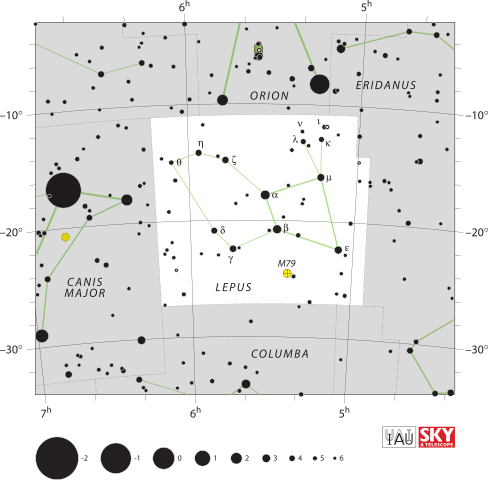
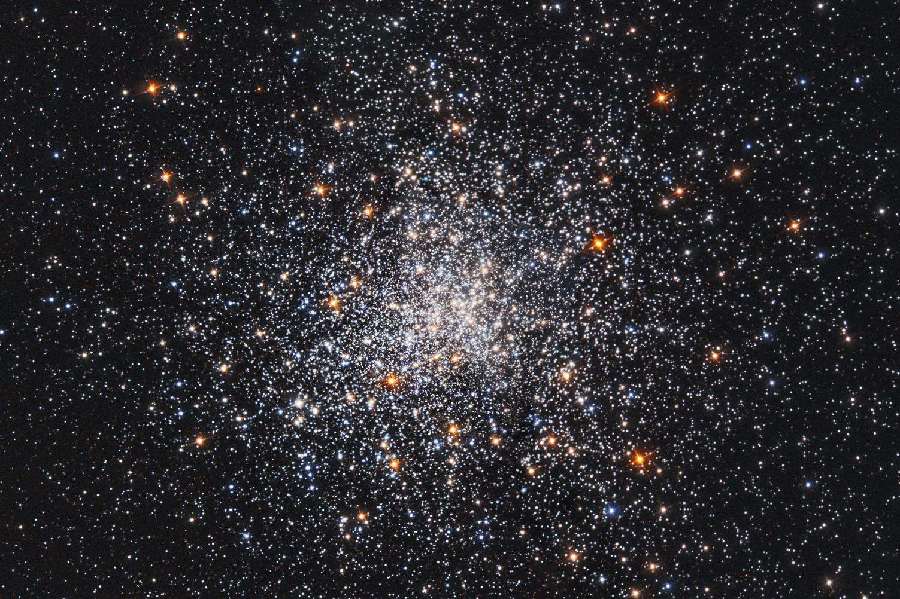

Lepus (Latin for "hare"; IAU abbreviation Lep; genitive Leporis) is a constellation of the southern sky, ranked 51st in size among the 88 modern constellations. It covers 290 square degrees and is situated immediately south of the brilliant Orion, representing the hare pursued by the celestial hunter and his dogs. The constellation is one of the 48 listed by the Alexandrian astronomer Ptolemy in the 2nd century CE and remains one of the 88 constellations formally designated by the International Astronomical Union.
Lepus is best seen in January, when it transits the meridian at 21:00 local time. It is visible from latitudes between +63° and −90°, making it accessible from nearly all populated regions of Earth. Its bordering constellations are Orion to the north, Eridanus to the west, Caelum and Columba to the south, Canis Major to the southeast, and Monoceros to the east.

IAU and Sky & Telescope magazine (Roger Sinnott & Rick Fienberg), CC BY 3.0
{kind=link}
Mythology
In the most widely told Greek account, Lepus represents a hare crouching at the feet of Orion, which Orion pursues alongside his two hunting dogs, Canis Major and Canis Minor. The mythographer Eratosthenes attributed the hare's placement in the sky to Hermes, who set it there in recognition of its legendary swiftness. A separate legend connects Lepus to the island of Leros, where hares introduced by the islanders proliferated uncontrollably; the image was set in the sky as a lesson on moderation.
The Greek poet Aratus referred to the constellation as Lagos (the Hare) in his 3rd-century BCE astronomical poem Phaenomena. The ancient Egyptians interpreted the same stars differently, seeing in them a boat carrying the god Osiris. Four stars — α, β, γ, and δ Leporis — form a prominent quadrilateral that Arab astronomers knew as al-Nihāl, "the camels quenching their thirst," a name that survives in the star names Arneb and Nihal.
Notable Stars
Alpha Leporis — Arneb. Arneb (from Arabic al-arnab, "the hare") is the brightest star in Lepus, with an apparent magnitude of 2.59. It is classified as a yellow-white supergiant of spectral type F0 Ib and has served since 1943 as one of the anchor stars for stellar spectral classification. Arneb lies approximately 2,200 light-years away and shines with a luminosity about 27,000 times that of the Sun. With a mass of 12–13 solar masses and a radius of 74–105 solar radii, it is a massive, evolved star estimated to be only 13 million years old. Arneb has already completed a red supergiant phase and is now contracting and heating in a blue loop; it will ultimately end its life as a supernova.
Beta Leporis — Nihal. Nihal (from Arabic al-nihāl, "quenching their thirst") is the second-brightest star in Lepus, with an apparent magnitude of 2.84. It is a G-type bright giant (spectral type G5 II) located approximately 160 light-years from Earth. Nihal has a mass of 3.5 solar masses, a radius of 15.9 solar radii, and a luminosity of 160 L⊙. The system is a binary star: a companion at 2.58 arcsecond separation has an apparent magnitude of 7.34 and is itself a suspected variable.
Other stars of note include Gamma Leporis, a wide double star easily resolved in binoculars with a yellow primary at magnitude 3.6 only 29 light-years away; Epsilon Leporis, an orange giant at magnitude 3.2 and 227 light-years distant; and Delta Leporis, a yellow giant at magnitude 3.8 and 112 light-years distant.
Deep-Sky Objects
Messier 79 (M79; NGC 1904) is the most prominent deep-sky object in Lepus and one of the few Milky Way globular clusters visible in the northern winter sky. It was discovered by Pierre Méchain in 1780. M79 has an apparent magnitude of 7.7 and spans approximately 8.7 arcminutes, corresponding to a physical radius of about 53 light-years. It lies roughly 42,000 light-years from Earth — notably far from the Galactic Centre — and is estimated to be approximately 11.7 billion years old. Research suggests M79 may have an extragalactic origin, possibly associated with the Canis Major Dwarf Galaxy, and it is being gradually disrupted by Galactic tidal forces.

ESA/Hubble; S. Djorgovski (Caltech) and F. Ferraro (University of Bologna), CC BY 4.0
{kind=link}
IC 418 — The Spirograph Nebula is a compact planetary nebula in Lepus with an apparent magnitude of 9.6, lying approximately 3,600 light-years from Earth. It formed a few thousand years ago when an evolved red giant expelled its outer layers, which are now ionised and made luminous by the hot central star (HD 35914, spectral type O7fp). The nebula spans about 0.3 light-years across, and its intricate filamentary structure resembles the geometric patterns of a Spirograph drawing toy, giving rise to its popular name.
Hind's Crimson Star — R Leporis
R Leporis is one of the most striking variable stars in the sky, nicknamed 'Hind's Crimson Star' for its deep blood-red colour. It was discovered by the British astronomer John Russell Hind in 1845, who described it as "like a drop of blood on a black field." R Leporis is a Mira-type long-period variable and a carbon star, classified as spectral type C7,6e(N6e). Its apparent magnitude varies from 11.7 at minimum to as bright as 5.5 at maximum, with a primary period of approximately 427 days. The star lies approximately 1,490 light-years from Earth. The intense red colour arises from carbon molecules in the star's outer atmosphere, which absorb blue and green wavelengths preferentially, leaving only red light to escape; the colour is most pronounced when R Leporis is near minimum brightness.
Observing Lepus
Lepus is a winter constellation for northern-hemisphere observers, remaining well placed throughout December, January, and February. At southern latitudes it reaches higher altitudes than at northern sites, making Australia, South Africa, and South America particularly favourable locations for observation. The constellation's proximity to the brilliant Orion makes it straightforward to locate: dropping south from Orion's feet leads directly to the quadrilateral formed by α, β, γ, and δ Leporis. M79 can be resolved in a small telescope of 75–100 mm aperture; IC 418 requires at least 150 mm to show structure beyond a stellar point of light; and R Leporis is within binocular reach for several months around maximum.